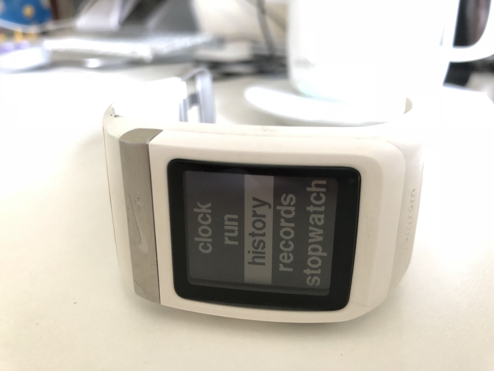

-
Dependency Error: Yikes! It looks like you don’t have jekyll-paginate or one of its dependencies installed. In order to use Jekyll as currently configured, you’ll need to install this gem. The full error message from Ruby is: ‘cannot load such file – jekyll-paginate’ If you run into trouble, you can find helpful resources at https://jekyllrb.com/help/!
• Sep 11, 2019
-
Among longtime Apple fans, there’s an idea that Apple no longer innovates. Among Apple haters, the idea is that they’ve stolen every great idea. I tend to disagree with both schools of thought.
• Sep 11, 2019
-

I’ve been a dedicated user of running products in the Nike ecosystem since the original launch of the Nike+ back in May of 2006. In that time, I’ve logged over 4400 miles using various devices, including the Nike+ iPod, Nike+ Smartwatch and now, the Nike Run Club app. It’s safe to say that I’m committed to Nike products.
• May 8, 2018
-
Originally published on April 30, 2013, I have updated this article and will continue to update it.
• Apr 24, 2018
-
In a previous entry, I wrote about my use of Git and how I preferred to use a Git client (Tower) as opposed to the command line. In that entry, I listed some basic Git commands. These were the basic commands that I needed to push content to the repository for this site.
• Feb 8, 2017
-
And beyond this there lies in the ocean, turned towards the west and north, the island of Niatirb which Hecataeus indeed declares to be the same size and shape as Sicily, but it is larger, though in calling it triangular a man would not miss the mark. It is densely inhabited by men who wear clothes not very different from the other barbarians who occupy the north western parts of Europe though they do not agree with them in language. These islanders, surpassing all the men of whom we know in patience and endurance, use the following customs.
• Dec 10, 2016
-
My daughter decided to confound me this afternoon by hitting the option key 5 times on our MacMini. She did this accidentally, and without knowing that she did, but once she did, the keyboard no longer worked in its normal way. Unbeknownst to me, she enabled Mouse Keys.
• Nov 19, 2016
-
I’m a big fan of trying out alternative browsers. In this entry, I’m going to list my five favorite alternative browsers. By alternative, I mean, not Safari, Firefox or Chrome which make up over 92% of browser usage worldwide.
• Nov 15, 2016
-
The process for working with Ricoh Theta S VR files requires a couple intermediate steps before you can import the footage into Premiere. I can’t speak to any other editing software but I would expect it to be the case for others as well.
• Nov 14, 2016
-
I’m a big fan of Evernote. So much so, that in a previous entry on my business blog, I outlined the reasons that I thought Evernote was the best software for writing (among other things).
• Nov 12, 2016